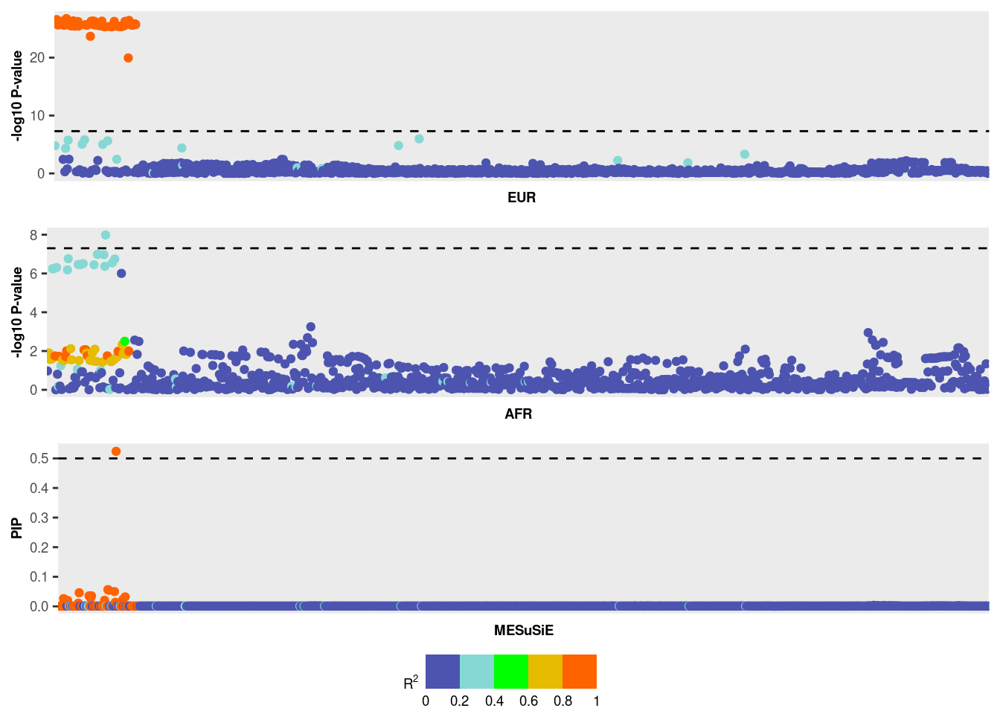

Last updated: 2023-10-09
Checks: 6 1
Knit directory: meSuSie_Analysis/
This reproducible R Markdown analysis was created with workflowr (version 1.7.0). The Checks tab describes the reproducibility checks that were applied when the results were created. The Past versions tab lists the development history.
Great! Since the R Markdown file has been committed to the Git repository, you know the exact version of the code that produced these results.
Great job! The global environment was empty. Objects defined in the global environment can affect the analysis in your R Markdown file in unknown ways. For reproduciblity it’s best to always run the code in an empty environment.
The command set.seed(20220530) was run prior to running
the code in the R Markdown file. Setting a seed ensures that any results
that rely on randomness, e.g. subsampling or permutations, are
reproducible.
Great job! Recording the operating system, R version, and package versions is critical for reproducibility.
Nice! There were no cached chunks for this analysis, so you can be confident that you successfully produced the results during this run.
Using absolute paths to the files within your workflowr project makes it difficult for you and others to run your code on a different machine. Change the absolute path(s) below to the suggested relative path(s) to make your code more reproducible.
| absolute | relative |
|---|---|
| /net/fantasia/home/borang/Susie_Mult/meSuSie_Analysis/data/MESuSiE_Example.RData | data/MESuSiE_Example.RData |
Great! You are using Git for version control. Tracking code development and connecting the code version to the results is critical for reproducibility.
The results in this page were generated with repository version ba8db56. See the Past versions tab to see a history of the changes made to the R Markdown and HTML files.
Note that you need to be careful to ensure that all relevant files for
the analysis have been committed to Git prior to generating the results
(you can use wflow_publish or
wflow_git_commit). workflowr only checks the R Markdown
file, but you know if there are other scripts or data files that it
depends on. Below is the status of the Git repository when the results
were generated:
Untracked files:
Untracked: data/GLGC_chr_22.txt
Untracked: data/MESuSiE_Example.RData
Untracked: data/UKBB_chr_22.txt
Unstaged changes:
Deleted: analysis/illustration.Rmd
Deleted: analysis/toy_example.Rmd
Note that any generated files, e.g. HTML, png, CSS, etc., are not included in this status report because it is ok for generated content to have uncommitted changes.
These are the previous versions of the repository in which changes were
made to the R Markdown (analysis/Run_MESuSiE.Rmd) and HTML
(docs/Run_MESuSiE.html) files. If you’ve configured a
remote Git repository (see ?wflow_git_remote), click on the
hyperlinks in the table below to view the files as they were in that
past version.
| File | Version | Author | Date | Message |
|---|---|---|---|---|
| Rmd | ba8db56 | borangao | 2023-10-09 | Update my analysis |
| html | 504f3a9 | borangao | 2023-10-09 | Build site. |
| Rmd | 62ce4b3 | borangao | 2023-10-09 | Update my analysis |
Use the example from Data preparation. We provide
organize data and organize_ld function to do
the sanity check and organize the summary statistics and LD into the
MESuSiE input format.
organize_gwas FunctionThe organize_gwas function harmonizes two input GWAS
datasets. Specifically, it:
This function ensures datasets from varied sources are compatible and ready for subsequent analysis with MESuSiE.
organize_ld FunctionThe organize_ld function ensures that two LD matrices
are symmetric and compatible with provided GWAS datasets:
library(dplyr)
library(MESuSiE)
load("/net/fantasia/home/borang/Susie_Mult/meSuSie_Analysis/data/MESuSiE_Example.RData")
summ_stat_list<-organize_gwas(UKBB_example%>%rename(SNP = CHR_POS),GLGC_example%>%rename(SNP = CHR_POS),c("EUR","AFR"))
colnames(WB_cov)<-UKBB_example$CHR_POS
colnames(BB_cov)<-GLGC_example$CHR_POS
LD_list<-organize_ld(WB_cov,BB_cov,summ_stat_list)MESuSiE_res<-meSuSie_core(LD_list,summ_stat_list,L=10)*************************************************************
Multiple Ancestry Sum of Single Effect Model (MESuSiE)
Visit http://www.xzlab.org/software.html For Update
(C) 2022 Boran Gao, Xiang Zhou
GNU General Public License
*************************************************************
# Start data processing for sufficient statistics
# Create MESuSiE object
# Start data analysis
# Data analysis is done, and now generates result
Potential causal SNPs with PIP > 0.5: 22_21958872
Credible sets for effects:
$cs
$cs$L1
[1] 7 8 26 38 40 41 57 61 62 69 71 79 82
$cs_category
L1
"EUR_AFR"
$purity
min.abs.corr mean.abs.corr median.abs.corr
L1 0.9978499 0.9991224 0.9992341
$cs_index
[1] 1
$coverage
[1] 0.9551583
$requested_coverage
[1] 0.95
Use MESuSiE_Plot() for visualization
# Total time used for the analysis: 0.07 minsThe MESuSiE results can be interpreted in terms of the 95% credible set and SNP-level Posterior Inclusion Probabilities (PIPs).
For instance, in the provided example, the credible set contains 13
SNPs labeled as EUR_AFR, indicating these SNPs are shared
across multiple ancestries.
PIPs We used a PIP cutoff of 0.5 to declare signal.
MESuSiE_res$pip[MESuSiE_res$cs$cs$L1] [1] 0.02617149 0.02411160 0.04600253 0.03558618 0.02805318 0.03538103
[7] 0.02041509 0.05667729 0.05446116 0.04994392 0.52385726 0.02241395
[13] 0.03208367In the example provided, one SNP exhibits a PIP greater than 0.5. However, this does not inform us whether the SNP is shared or ancestry-specific. To make that inference, we need to further analyze the PIP values for shared or ancestry-specific effects, which is the unique feature provided by MESuSiE.
MESuSiE_res$pip_config[MESuSiE_res$cs$cs$L1,] EUR AFR EUR_AFR
[1,] 0.0003748811 0.0002535134 0.02617115
[2,] 0.0003748810 0.0002532205 0.02411128
[3,] 0.0003748798 0.0002476710 0.04600234
[4,] 0.0003748806 0.0002482805 0.03558589
[5,] 0.0003748802 0.0002483030 0.02805295
[6,] 0.0003748805 0.0002483253 0.03538074
[7,] 0.0003748796 0.0002484404 0.02041492
[8,] 0.0003748794 0.0002484522 0.05667714
[9,] 0.0003748793 0.0002485671 0.05446102
[10,] 0.0003748793 0.0002480695 0.04994379
[11,] 0.0003748793 0.0002610915 0.52385712
[12,] 0.0003748795 0.0002468203 0.02241380
[13,] 0.0003748793 0.0002458986 0.03208353From the results, SNP with a PIP greater than 0.5 represents a shared causal signal.
When running meSuSie_core, various tuning parameters can
be adjusted to refine the results:
L): Specify the
number of effects to consider.prior_weights): This
represents the prior probability of a SNP being causal. By default, it
is set to . Users can adjust this parameter to incorporate functional
annotation into MESuSiE.ancestry_weight):
Configure the weighting for different ancestries. We set the ratio of
ancestry-specific to shared as 3:1 to encourage the ancestry-specific
causal SNP detection.
estimate_residual_variance): This parameter can
be set to either TRUE or FALSE. When set to TRUE, the residual variance
is estimated, while when set to FALSE, it is fixed at one. For
multi-ancestry GWAS fine-mapping, it’s typically advisable to fix the
residual variance at one to enhance robustness, given that the
heritability of the local region is often minimal. However, when using
MESuSiE for multi-ancestry eQTL fine-mapping, it’s recommended to
estimate the residual variance since the heritability of the gene
expression is relatively significant.cor_method & cor_threshold):
min_abs_corr, representing the minimum absolute correlation
permissible within a credible set across ancestries. This is a prevalent
threshold for genotype data in genetic studies.min_abs_corr. By default, this is set to 0.5.Note: We’ve made available function
meSuSie_get_csallowing users to tweak the results based on varyingcor_methodandcor_threshold. The best part? You can adjust without having to rerun the entire analysis.
MESuSiE_Plot(MESuSiE_res,LD_list,summ_stat_list)
| Version | Author | Date |
|---|---|---|
| 504f3a9 | borangao | 2023-10-09 |
sessionInfo()R version 4.3.1 (2023-06-16)
Platform: x86_64-pc-linux-gnu (64-bit)
Running under: Ubuntu 20.04.6 LTS
Matrix products: default
BLAS: /usr/lib/x86_64-linux-gnu/openblas-pthread/libblas.so.3
LAPACK: /usr/lib/x86_64-linux-gnu/openblas-pthread/liblapack.so.3; LAPACK version 3.9.0
locale:
[1] LC_CTYPE=en_US.UTF-8 LC_NUMERIC=C
[3] LC_TIME=en_US.UTF-8 LC_COLLATE=en_US.UTF-8
[5] LC_MONETARY=en_US.UTF-8 LC_MESSAGES=en_US.UTF-8
[7] LC_PAPER=en_US.UTF-8 LC_NAME=C
[9] LC_ADDRESS=C LC_TELEPHONE=C
[11] LC_MEASUREMENT=en_US.UTF-8 LC_IDENTIFICATION=C
time zone: America/New_York
tzcode source: system (glibc)
attached base packages:
[1] stats graphics grDevices utils datasets methods base
other attached packages:
[1] MESuSiE_1.0 dplyr_1.1.2 workflowr_1.7.0
loaded via a namespace (and not attached):
[1] gtable_0.3.1 xfun_0.39 bslib_0.5.0
[4] ggplot2_3.4.2 processx_3.8.0 ggrepel_0.9.1
[7] lattice_0.20-45 callr_3.7.3 vctrs_0.6.2
[10] tools_4.3.1 ps_1.7.2 generics_0.1.3
[13] tibble_3.2.1 fansi_1.0.5 highr_0.10
[16] pkgconfig_2.0.3 Matrix_1.5-4.1 data.table_1.14.8
[19] lifecycle_1.0.3 compiler_4.3.1 farver_2.1.1
[22] stringr_1.5.0 git2r_0.32.0 progress_1.2.2
[25] munsell_0.5.0 getPass_0.2-2 httpuv_1.6.11
[28] htmltools_0.5.5 sass_0.4.6 yaml_2.3.7
[31] later_1.3.1 pillar_1.9.0 nloptr_2.0.3
[34] crayon_1.5.2 jquerylib_0.1.4 whisker_0.4.1
[37] tidyr_1.3.0 ellipsis_0.3.2 cachem_1.0.8
[40] tidyselect_1.2.0 digest_0.6.30 stringi_1.7.12
[43] purrr_1.0.1 labeling_0.4.2 RcppArmadillo_0.11.1.1.0
[46] cowplot_1.1.1 rprojroot_2.0.3 fastmap_1.1.1
[49] grid_4.3.1 colorspace_2.1-0 cli_3.6.1
[52] magrittr_2.0.3 utf8_1.2.3 withr_2.5.1
[55] prettyunits_1.2.0 scales_1.2.1 promises_1.2.0.1
[58] rmarkdown_2.22 httr_1.4.6 hms_1.1.2
[61] evaluate_0.18 knitr_1.39 irlba_2.3.5.1
[64] rlang_1.1.1 Rcpp_1.0.11 mixsqp_0.3-48
[67] glue_1.6.2 rstudioapi_0.14 jsonlite_1.8.3
[70] R6_2.5.1 fs_1.6.2